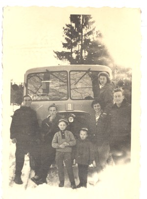
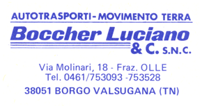
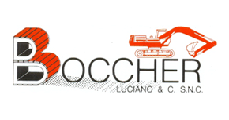

Da Luciano Boccher nel 1957 a Boccher S.r.l., con circa 20 addetti.

Luciano Boccher comincia con una ditta individuale.
Nasce la società, con il figlio Franco Boccher: iscrizione all'Albo delle Imprese Artigiane.
Autorizzazione al trasporto conto terzi.
Iscrizione all'Albo Nazionale Costruttori.
Apre l'impianto per il recupero dei rifiuti inerti, che altrimenti finirebbero in discarica.
Certificazione UNI ISO 9002, poi UNI ISO 9001 nel 2003, e la prima attestazione SOA.
La nuova sede amministrativa nella zona artigianale di Borgo Valsugana.
Il 50° anno di fondazione, e l'autorizzazione a una nuova discarica di materiali inerti.
Gli impianti per gli aggregati cominciano a trasferirsi in Località Visle.
Tutte le costruzioni passano in Boccher S.r.l.: circa 20 addetti, in provincia di Trento.

